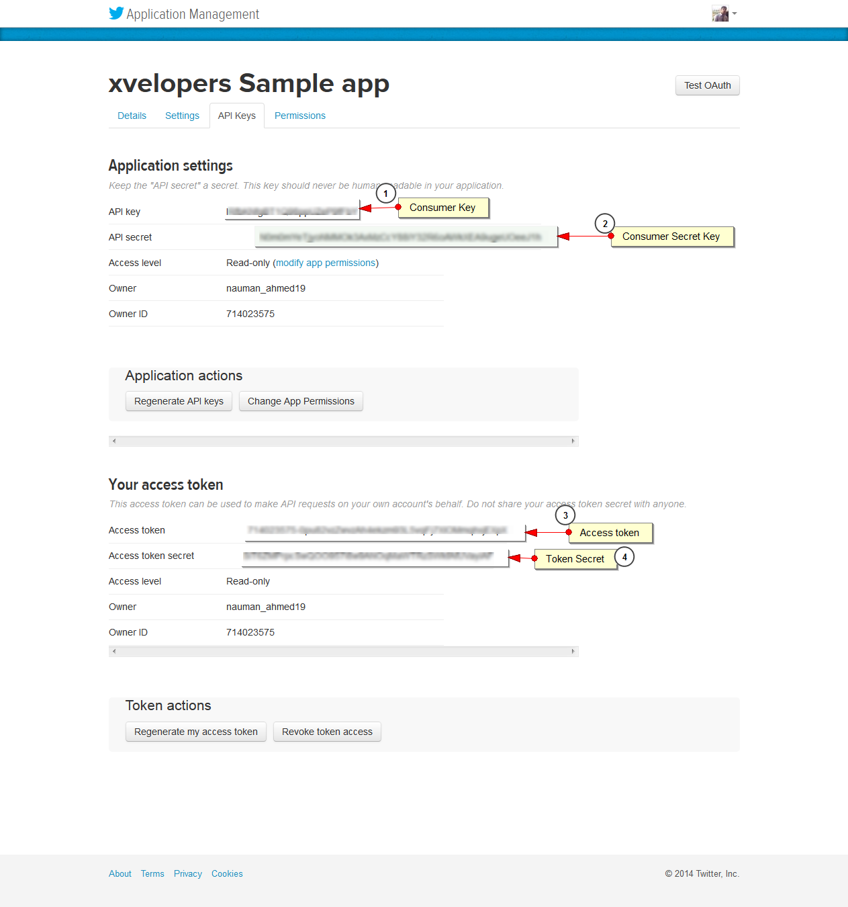
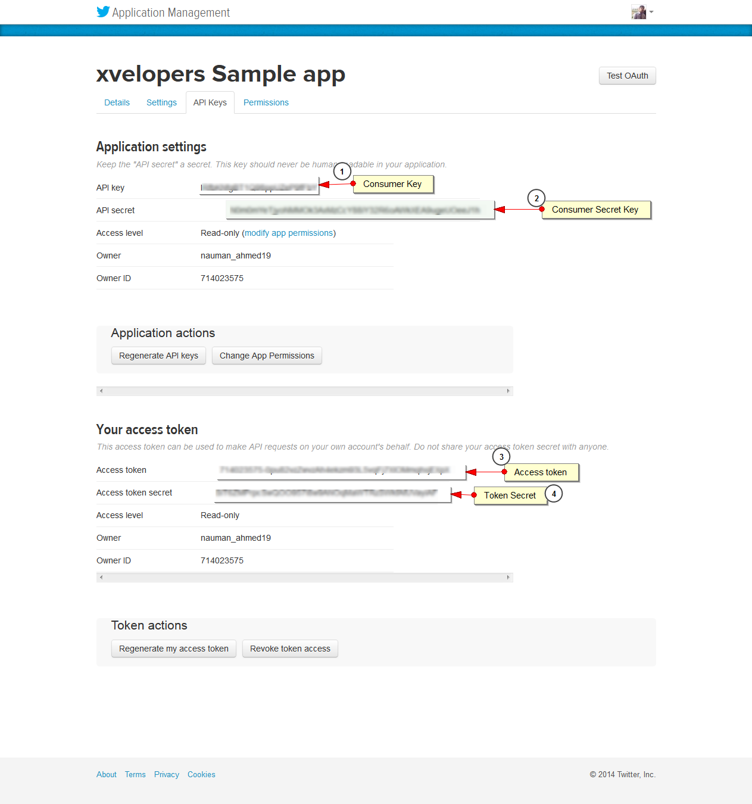

Poison | Multipurpose HTML5 Theme
Designed/Developed By: Xvelopers
Designed/Developed By: Xvelopers
This theme was built with the help of Twitter Bootstrap.
Open the TEMPLATE folder and your will find all HTML, CSS, JS and PHP files that you'll need to customize and add your content.
| Pages | Description |
|---|---|
index |
Home pages to put informative data for your visitors |
index2 |
Same is index.html but with different banner style |
index3 |
Same is index.html but with different banner style |
index4 |
Same is index.html but with Fullscreen video Background |
index5 |
Same is index.html but with different banner style |
assets/css folder
(In css folder you will find different css files, those files are used by jquery plugins, Following fils are important file that have custome css rules for Poison theme.)
| File Name | Description |
|---|---|
main.css |
Main CSS file of the template. |
bootstrap.min.cssbootstrap-responsive.min.css |
Twitter Bootstrap framework. |
assets/js folder
(In JS folder you will find different JS files, those files are used by jquery plugins, Following fils are important file that have custome css rules for Poison theme.)
| File Name | Description |
|---|---|
main.js |
Main JS file to call and init all javascript used in the template. **** You can edit/update inilitilizations of all plugins |
bootstrap.min.js |
Twitter Bootstrap framework. |
jquery-1.11.1.min.jsjquery.easing-1.3.pack.js |
jQuery library. |
modernizr-2.6.2-respond-1.1.0.min.js |
Modernizr library. |
assets/img folder
assets/font folder
| File Name | Description |
|---|---|
Fonts awesome |
Fonts awesome |
data-sticky attribute inside main wrapper of respective element i.e in case of navigation you can see the following code where data-sticky atribute is set to true that will make navigation sticky, if you do not want navigation to stick you simply have to change this true to false ie data-sticky="false"
<nav id="sticktop" class="navbar navbar-default" data-sticky="true"></nav>
main.css contains all of the specific stylings for the page. The file is separated into sections using:
Table OF Contents ========================== 1-Preloader 2-General Styles 3-Main Bannners 4-Audio Player 5-Banner 6-parallax 7-Channels 8-Navigation 9-Tweets 10-News/Tracks 11-Newsletter 12-facebook Promo 13-popup 14-testimonial 15-Event Promo 16-Media 17-Tour 18-music popup 19-team Section 20-Footer
It is recommended that you must get familiar with the API of the plugins used in this template that will help to modify things easily, Links to the plugin sites cold be found in the credit section
Table OF Contents
==========================
1-Hero Header
2-Navigation
3-Video Banner
4-Gallery
5-Fraction Slider
6-Parallax
7-Carousel fredsel
8-Owl Slider
9-Vegas Slider
10-Tweet
11-JPlayer
Follow Steps as folows and add these information in php/tweet_api/config.php
 

News are loaded form the seperate HTML page named news.html, All you have to do is to follow the structure that has been used for news. You must follow both structure in news.html and news section in index.html pages.
Albums are loaded form the seperate HTML page named albums.html, All you have to do is to follow the structure that has been used for Albums. You must follow both structures in albums.html and Albums section in index.html pages.
Gallery uses bootstrap modal, Currently all galleries are linked to same modal there for you will see same content for each Gallery, You have to add more modals, One modal of evey Gallery.
You can even use Ajax for Galleries too, as has been used in news and albums. You will have to reuse that codeI've used the following images, icons or other files as listed.